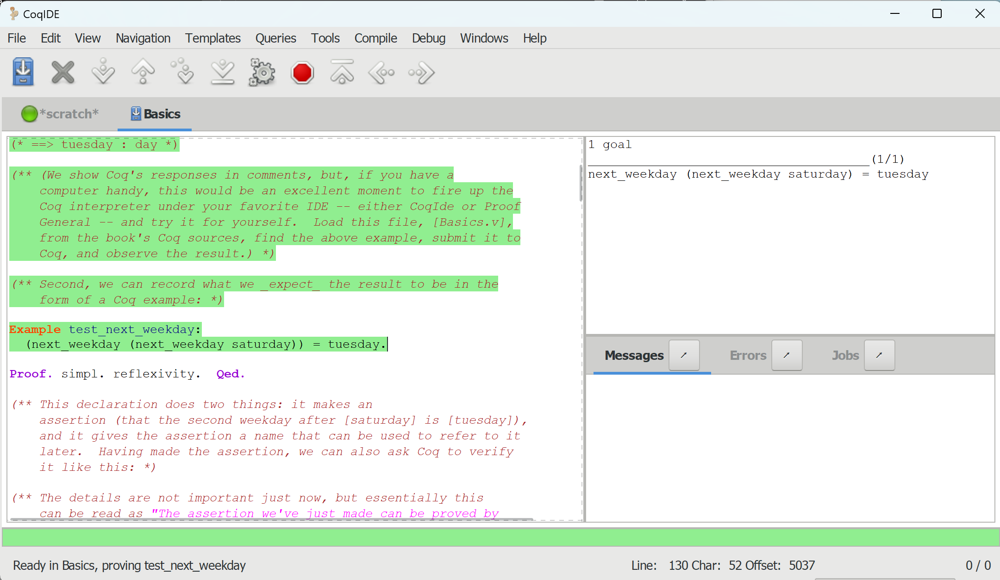
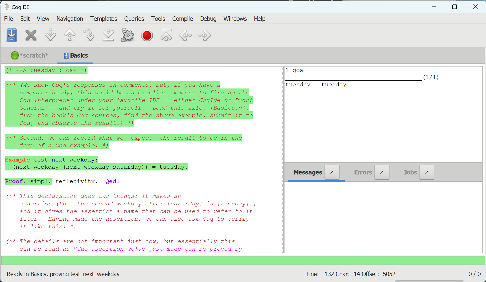
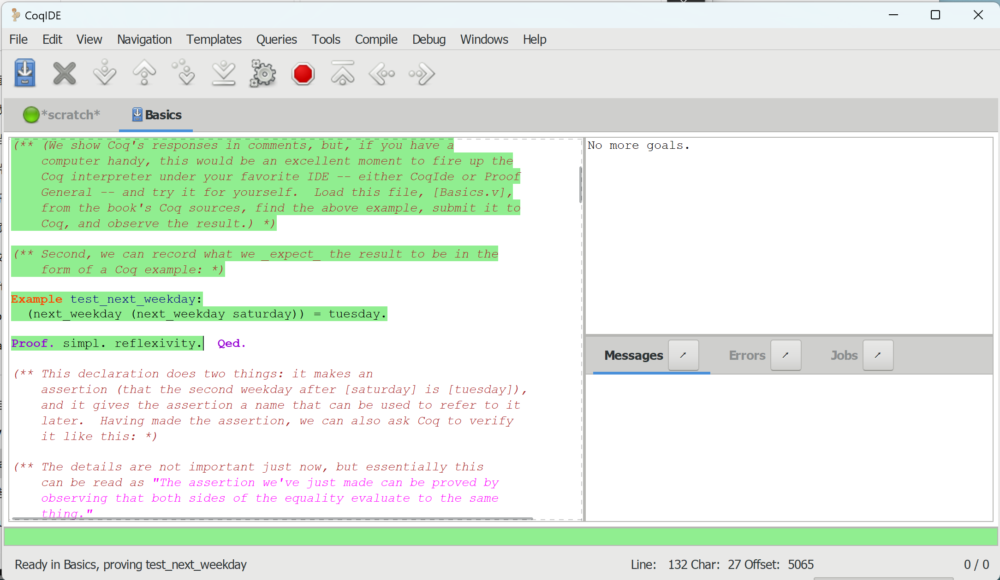
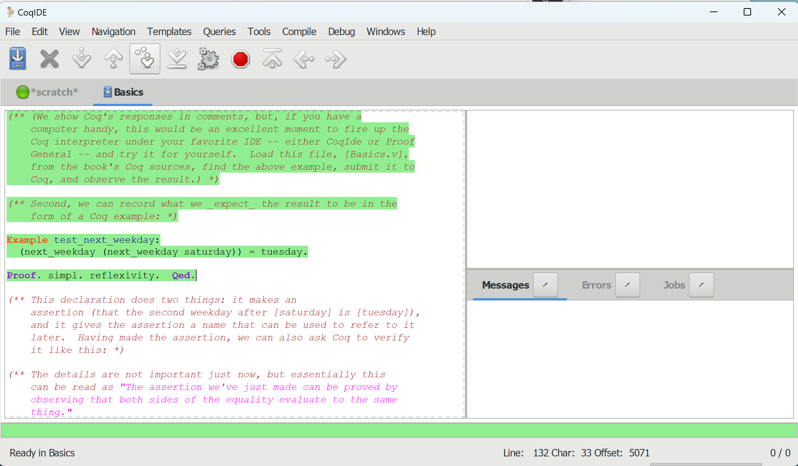
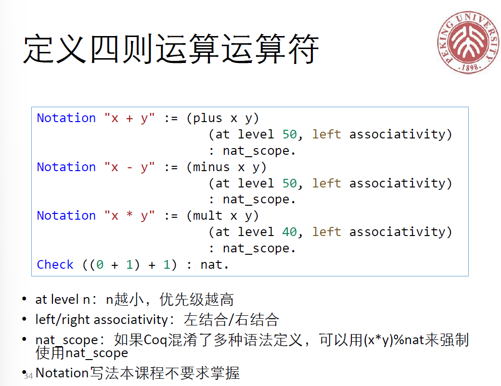

Software Foundations
Michael Clarkson's Open Online Course (on Youtube) Michael Charkson's Course (on Bilibili)
Xiong Yingfei's Course Webpage (2023 Spring)
This note is used as a brief summary and supplementofr the textbook and courses.
Basics
Enumerated Types
1 | Inductive day : Type := |
1 | Definition next_weekday (d:day) : day := |
Then we can do the computation. 1
2Compute (next_weekday friday).
(* ==> monday : day *)
Note that pattern-machine needs to be exhaustive, and cannot be redundant.
For example:
1 | Definition to_monday (d:day) : day := |
1 | Definition to_monday (d:day) : day := |
Function Call
Function call in Coq is by tapping the space bar, like
f a, it is left associative (that is to say
f a b is equal to (f a) b), and is with nearly
the highest priority (i.e. f a + b is equal to
(f a) + b).
Equality
There are two notions of equality in Coq: the equals operator and the
equals question mark operator. - The equals operator is a logical claim,
means something we try to prove. Currently we only use this . - The
equals question mark operator is an expression that Coq computes.
Notation x=?y, x<=?y use question to denote
that this returns a boolean variable.
Theory Proof
Theory proof is the core of Coq, and it is with the form:
1 | Example test_next_weekday: |
Or we may proof Lemma, Theorem, etc. other
than Example.
In the CoqIde, we can observe the proof process step by step with the help of 'Run to curser' icon.
Take the above proof process as an example:




Notation
Programmers can introduce new grammar rule.
1 | Notation "x && y" := (andb x y). |

1 | Notation "x =? y" := (eqb x y) (at level 70) : nat_scope. |
if-then-else in Coq
if-then-else in Coq is quite different than in other
languages, as type bool is not inherented in Coq.
In Coq, if can be applied to any type with two
constructors. If the condition variable is constrcted by the first, go
to then, otherwise go to else.
1 | Inductive nbool : Type := |
Check
Used to inspect the type of expressions. (variables and functions), for example:
1 | Check true. |
bool \(\rightarrow\) bool means a function with input of a bool variable and output of a bool variable. (just like Haskell). \(\rightarrow\) is right associative.
Details of symbl. and reflexivity.
Coq syntax 1. Vernacular: Give commands to change what Coq is doing.
Include Check, Theorem, Proof,
Qed etc. 2. Gallina: Functional programming language, write
code and state theorem with this. Include match,
if, forall. 3. Ltac: Language for tactics,
structure proofs into sections. Include intros,
simpl, reflexivity, destruct.
Lambda calculus (Theoretical underpinning of functional programming). \(e ::= x | \lambda x . e | e_1 e_2\)
Reduction tactics - simpl.: "human readable" -
cbn.: call by name, try it if simpl. doesn't
work. - cbv.: call by value, fully compute. Its result may
be big and hard to read, unlike simpl..
Gallina (more than \(\lambda\)) Definitions (delta reduction) Inductive types, patter matching; recursion (iota reduction); Let bindings (zeta reduction)
Module System
Module in Coq is like namespace in C++ and
package in Java.
Natural Number
Definition of natural number
1 | Inductive nat : Type := |
Note that number 0 is denoted by captial letter O. S
represents succ in some other languages.
Recursive Function
Recursive function is defined by keyword Fixpoint,
i.e.
1 | Fixpoint even (n:nat) : bool := |
Coq only allows structural recursion.
intros
Introduce hypothesis including variable quantifiers and hypothesis (those before the right arrow).
1 | Theorem plus_id_example : forall n m:nat, |
Right arrow and left arrow are different in rewrite
expression. In the above example, n is replaced by
m, and in the following one, (p * 0) is
replaced by 0.
1 | (* mult_n_O ===> forall n : nat, 0 = n * 0 *) |
destruct
1 | Theorem plus_1_neq_0 : forall n : nat, |
([| n'] is equal to [O | S n'])
In the proof process above, destruct divide it into two
subgoals. The first is to prove that (0 + 1 =? 0) = false,
the second is to prove that (S n' + 1 =? 0) = false. In the
first subgoal, eqn:E name the hypothesis n=0 as E.
Two reflexivity. with a dash in front solves one
subgoal, respectively.
Here is another example of two variables need subgoal division.
1
2
3
4
5
6
7
8
9
10
11
12Theorem andb_commutative : forall b c, andb b c = andb c b.
Proof.
intros b c. destruct b eqn:Eb.
(* b = true *)
- destruct c eqn:Ec.
+ reflexivity. (* c = true *)
+ reflexivity. (* c = false *)
(* b = false *)
- destruct c eqn:Ec.
+ reflexivity. (* c = true *)
+ reflexivity. (* c = false *)
Qed.
Besides + and -, Coq also permits other
notations, like braces.